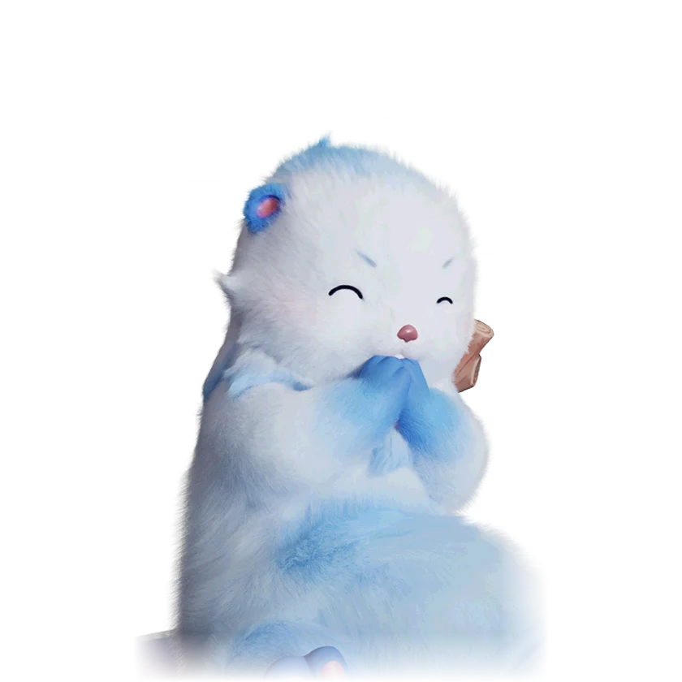

รายชื่อ Aniimo › #050

นากแอบรัก (Popota)
#050ธาตุน้ำGammaBreakTier D
เลือกเปลือกหอยมาทำเป็นพลั่ว ว่ากันว่าพวกมันจะปล่อยฟองสีชมพูเมื่อเห็นคนที่รัก
ดูรายละเอียดเต็ม ร่างพิเศษ และร่างเปล่งประกายค่าสถานะพื้นฐาน
| HP | 92 |
|---|---|
| ATK | 96 |
| P.DEF | 68 |
| M.DEF | 68 |
| REGEN | 67 |
| BREAK | 80 |
สกิล
| โจมตีปกติ | ATK น้ำ (BREAK) ใช้พลังน้ำโจมตีเป้าหมายระยะประชิด |
| สกิล 1 | Water Dash น้ำ พุ่งเข้าหาเป้าหมาย ทำดาเมจและกระแทกให้กระเด็นถอยหลัง |
| สกิล 2 | Water Cannon น้ำ กระโดดขึ้นแล้วขว้างลูกน้ำขนาดใหญ่ใส่เป้าหมาย ทำดาเมจวงกว้างและสร้างแอ่งน้ำ |
สายวิวัฒนาการ
- นากขี้อาย → นากแอบรัก (Aniimo เลเวล 29)
- นากแอบรัก → นากนักสร้าง (Aniimo เลเวล 39, ชนะ Alpha Panpanta)
- นากแอบรัก → นากเจ้าเสน่ห์ (Aniimo เลเวล 39, เข้าใกล้และดึงดูด Susuta เพศตรงข้ามให้เดินตาม)
จุดเกิด
- Echoback Landing Lv. 36–40
Held Item ที่แนะนำ
- Gargantuan Horn Aniimo ที่สวมใส่ได้ BREAK เพิ่ม 0.7 ต่อเลเวล
งานใน Homeland
งานธาตุน้ำ Lv.2, สันทนาการ Lv.2